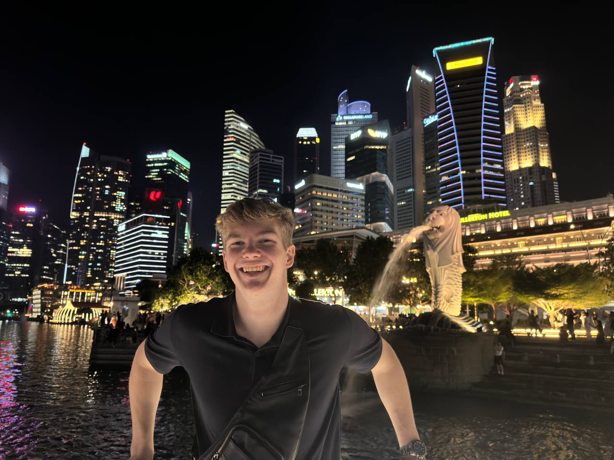
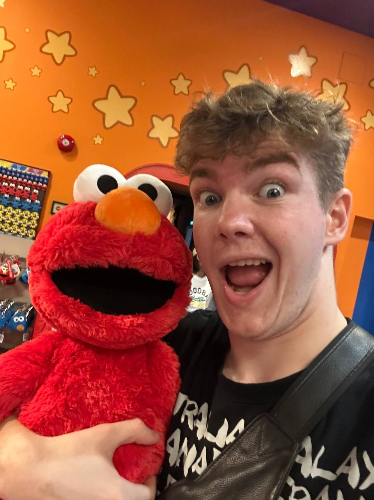
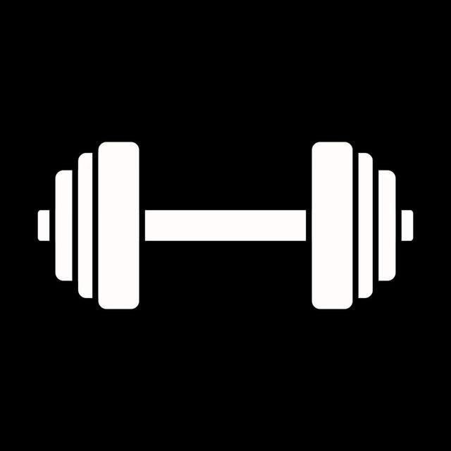
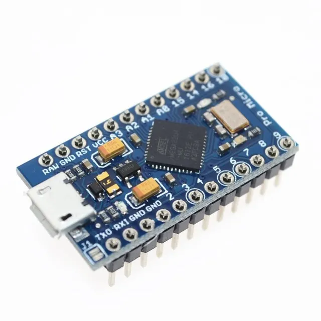

Привет! Я Кирилл
Разбираю IT на практике
Arduino, BadUSB, Telegram-боты — учусь через собственные проекты. Люблю железо, игры и когда всё работает.

Кто я и чем живу
Мне 19 лет, я живу в России. Постоянно пробую новые активности, ищу интересные направления и стараюсь найти своё дело, чтобы уже не отпускать его.
Мой дядя программист, он и научил основам. Пробовал HTML/CSS/JS, Python — не особо заходило. А недавно купил Arduino и подорвался: Pro Micro, BadUSB, эксперименты с PowerShell и ASCII-артом. А до этого написал Telegram-бота MRX TRAINING BOT. Пока это просто хобби, но идей — вагон.
Ещё я музыкальный — 9 лет музыкальной школы: фортепиано и вокал, получил красный диплом.
Со спортом я тоже дружу. В детстве успел перепробовать кучу всего: бокс, самбо, футбол, паркур. Сейчас стараюсь поддерживать форму в тренажёрном зале, иногда выбираюсь на скалолазание, а недавно начал учиться стрельбе из классического лука Samick Polaris.

Мои проекты
Пока что негусто, но без первого шага не бывает второго.

MRX TRAINING BOT
Telegram-бот для тренировок: логирование подходов, статистика, напоминалки. Написан на Python. Сейчас дорабатывается — хочу добавить графики прогресса и автопланы.
Открыть в Telegram →Эксперименты с микроконтроллерами
Недавно увлёкся, но уже есть пара занятных штук.

BadUSB на Pro Micro
Arduino Pro Micro притворяется USB-клавиатурой. Открывает PowerShell, выводит ASCII-анимацию Never Gonna Give You Up, показывает сообщения в txt, запускает ссылки.
// BadUSB — клавиатурная эмуляция на Pro Micro #include <Keyboard.h> void setup() { Keyboard.begin(); delay(1000); // Win + R → powershell Keyboard.press(KEY_LEFT_GUI); Keyboard.press('r'); delay(300); Keyboard.releaseAll(); delay(500); Keyboard.print("powershell"); Keyboard.press(KEY_RETURN); Keyboard.release(KEY_RETURN); delay(1500); // ASCII-анимация Rickroll Keyboard.print("echo 'Never Gonna Give You Up'"); Keyboard.press(KEY_RETURN); Keyboard.release(KEY_RETURN); delay(200); Keyboard.print("echo ' ╔══╗╔══╗╔╗─╔╗╔══╗╔══╗'"); Keyboard.press(KEY_RETURN); Keyboard.release(KEY_RETURN); delay(200); Keyboard.print("echo ' ╚╗╔╝║╔═╝║║─║║║╔╗║║╔═╝'"); Keyboard.press(KEY_RETURN); Keyboard.release(KEY_RETURN); // Создаём txt-файл с сообщением Keyboard.print("echo 'MRX был тут ;)' > Desktop\\hello.txt"); Keyboard.press(KEY_RETURN); Keyboard.release(KEY_RETURN); // Открываем видео Keyboard.print("Start https://youtu.be/dQw4w9WgXcQ"); Keyboard.press(KEY_RETURN); Keyboard.release(KEY_RETURN); } void loop() {}

Кузнечик — мелодия на пищалке
Первый проект после покупки набора. Пьезопищалка (buzzer) играет мелодию «В траве сидел кузнечик» по нажатию кнопки. База, но с неё всё началось.
// Кузнечик — мелодия на пьезопищалке const int BUZZER = 9; const int BUTTON = 2; // Частоты нот мелодии int melody[] = { 262, 262, 392, 392, 440, 440, 392, 349, 349, 330, 330, 294, 294, 262 }; int noteDurations[] = { 200, 200, 200, 200, 200, 200, 400, 200, 200, 200, 200, 200, 200, 400 }; void setup() { pinMode(BUZZER, OUTPUT); pinMode(BUTTON, INPUT_PULLUP); } void loop() { if (digitalRead(BUTTON) == LOW) { playMelody(); } } void playMelody() { for (int i = 0; i < 14; i++) { tone(BUZZER, melody[i], noteDurations[i]); delay(noteDurations[i] + 50); noTone(BUZZER); } }
Что хочу сделать
Идей куча, руки дойдут — реализую.
Ближайшие планы
Проекты, которые хочу запилить в ближайшее время:
- 🔊 Отвлекающее устройство — Bluetooth-модуль, удалённый запуск звука
- 🚗 Джампер — машинка с управлением через ПК или телефон
- 💡 Умный свет — управление освещением в комнате с голосом/кнопкой
- 🎤 Смена голоса — через ПК, обработать микрофон в реальном времени
- ⚡ BadUSB: перезагрузка ПК, перехват камеры, неуязвимые видео